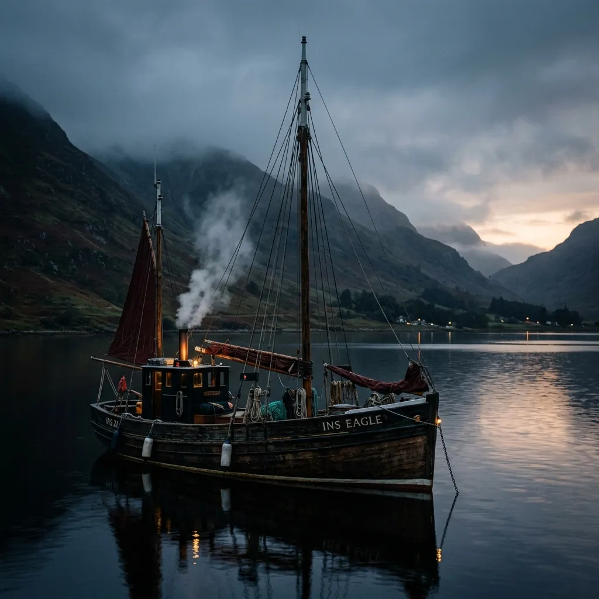
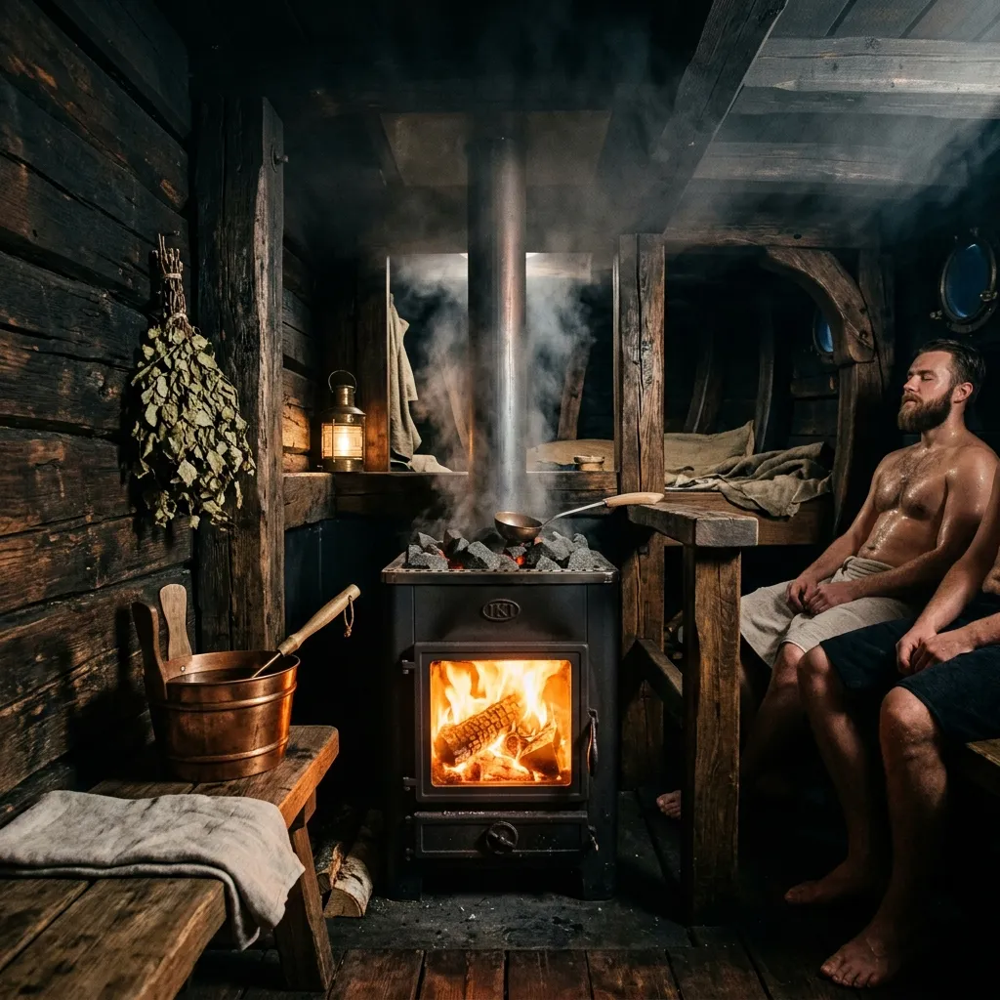
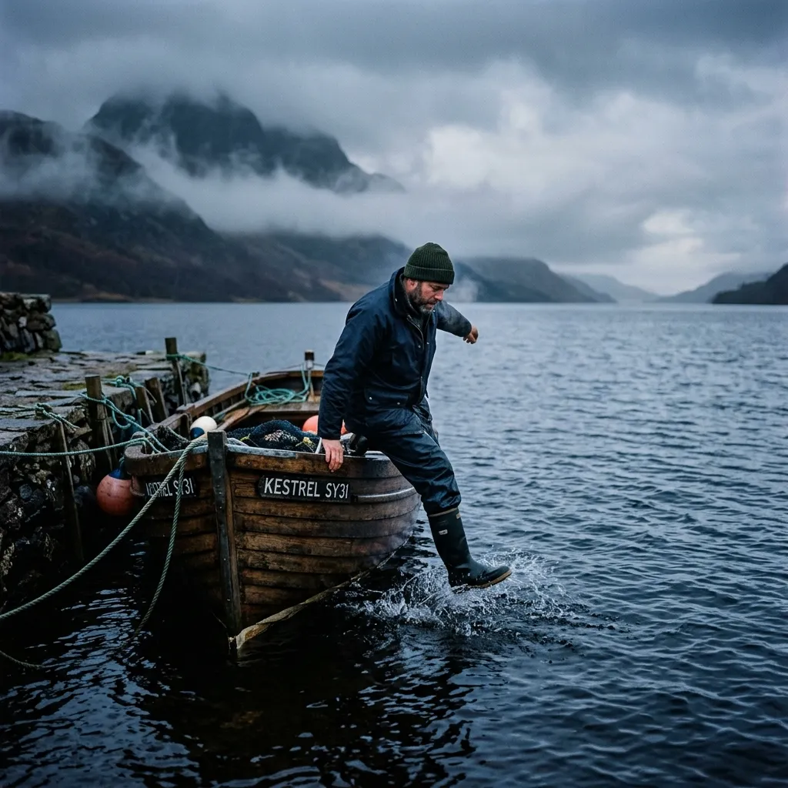
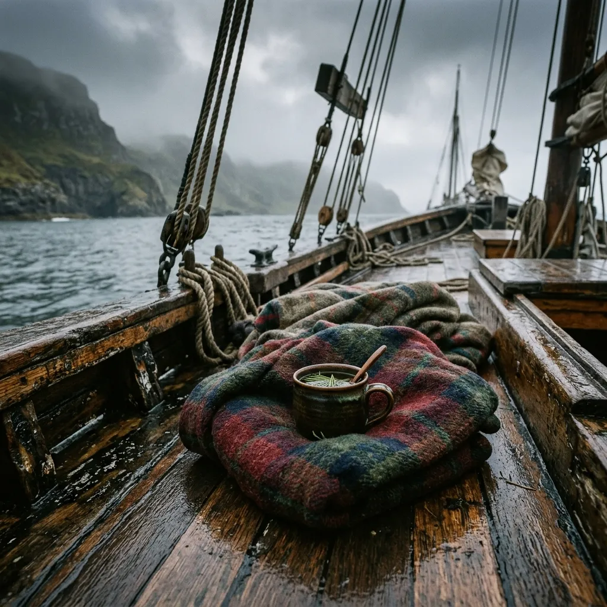

Sailing Thermal Contrast Sauna and Cold-Sea Plunge Recovery
Aegir Thermal Lugger delivers deep wood-fired sauna heat and North Atlantic ocean plunges aboard a restored 1954 Baltic wooden vessel.
Most modern day spas promise relaxation through ambient ambient music and synthetic steam rooms, miles away from any natural body of water. We operate aboard a 22-metre oak lugger anchored in secluded Hebridean sea lochs, where a wood-fired sauna stove heats the timber cabin to 90°C directly above the waterline. Stepping out of the steam, you step straight over the gunwale into 8°C salt water, letting the raw thermal contrast reset your nervous system.
Maritime Thermal Contrast & Sub-Arctic Hydrotherapy
True thermal contrast therapy relies on extreme, uncompromised deltas between intense dry heat and immediate cold immersion. Inside the Aegir’s deckhouse, a four-hundred-kilogram Finnish stone stove burns seasoned birch logs, radiating deep far-infrared heat that penetrates deep muscular tissue while kelp-infused sea steam clears respiratory pathways. The heavy oak frame of the vessel absorbs and holds this dry thermal energy, creating a steady, enveloping heat reservoir that city-bound saunas simply cannot match.
When your body reaches full vasodilation, the cure continues over the side of the hull. Stepping from the deckhouse into the brisk sea air of a Highland fjord, you plunge directly into the clear, tide-swept waters of Loch Nevis. The shock of the 8°C North Atlantic triggers an instant, profound vasoconstrictive response—flushing metabolic waste from fatigued muscles, stimulating brown adipose tissue, and releasing a surge of norepinephrine that sharpens mental clarity for days.
By anchoring in sheltered sea lochs away from roads and urban noise, the vessel provides an immersive sanctuary where recovery is dictated solely by the rhythm of the tides and the crackle of the stove. Between contrast cycles, guests rest on deck wrapped in heavy wool blankets, sipping wild pine-needle tea while watching the mist clear over the Hebridean hills.

Deckhouse Sauna & Overboard Immersion
Traditional Finnish sauna culture demands authentic timber framing and immense thermal mass. Our deckhouse was fully gutted and rebuilt using slow-grown spruce and raw Baltic birch, enveloping our massive 90°C cast-iron and peridotite stone stove. We avoid electric heaters entirely; the intense, dry heat is strictly generated by hardwood fire, infusing the cabin with the subtle scent of burning birch bark and aged timber.
Instead of relying on synthetic aromatics or weak steam pumps, we utilize local bull-kelp gathered directly from the Scottish coastal rocks. Soaked in sea-water and laid gently over the stove's upper stones, the kelp releases a dense, iodine-rich marine vapour. This organic steam opens the bronchial passages rapidly, preparing the respiratory system for the impending cold shock of the sea.
Our standard maritime contrast protocol involves rigorous, timed cycles for maximum physiological adaptation:
- Thermal Vasodilation: 15-minute sauna exposure at 90°C with kelp steam.
- Cold-Sea Plunge: 3-minute direct overboard immersion in 8°C North Atlantic tide.
- Circadian Reset: 10-minute open-deck recovery wrapped in dense Highland wool.
These intense intervals push the vascular system to actively pump out lactic acid and rapidly condition the vagus nerve. Overboard plunges are conducted via a custom heavy-timber lowering frame on the port side, allowing safe, supervised access to the deep waters of the anchorage.

View Session ProtocolAnatomy of a Floating Recovery Vessel
The Aegir-I is not a modern fiberglass pleasure yacht. She was laid down in 1954 in a small Baltic shipyard, constructed from heavily dimensioned oak framing and pitch-pine planking. Originally built to drag heavy herring nets through punishing North Sea winter gales, her profound structural stability makes her the perfect platform for a static tidal sauna. We have carefully preserved the massive oak knees and heavy deck beams, creating a deeply grounded, secure environment that feels immovable even when riding out a coastal swell.
Beneath the deckboards, where traditional fishing vessels would hold ice and catch, we have engineered an off-grid solar-thermal loop system. Copper heat exchangers wrap around the central stove flue, silently capturing waste thermal energy to pre-heat a thousand-litre internal freshwater rinse tank. This closed-loop system allows us to offer warm, fresh-water deck showers without running loud diesel generators or disturbing the silent anchorage.
The vessel's architecture inherently supports the therapeutic process. The heavy timber hull provides natural acoustic insulation, muting the wind and isolating guests from the outside world. The distinct smell of traditional Stockholm tar, used to seal the deck seams, blends perfectly with the birch smoke, grounding the entire sensory experience in genuine maritime craft.

Inspect Vessel SpecificationsSeasonal Anchorages & Coastal Itineraries
Sailing Over 1,200 Nautical Miles Annually Along Scotland's West Coast.
| Anchorage Location | Season | Access Tender Point | Water Temp Range | Typical Sea Depth |
|---|---|---|---|---|
| Loch Nevis & Knoydart Peninsula | Spring | Inverie Pier | 7.0°C – 9.5°C | 45 Metres |
| Sound of Sleat & Southern Skye | Summer | Armadale Jetty | 11.0°C – 13.5°C | 35 Metres |
| Loch Torridon & Badachro Bay | Autumn | Shieldaig Slipway | 9.0°C – 11.5°C | 60 Metres |
| Loch Hourn (Upper Reaches) | Winter | Arnisdale | 5.5°C – 7.5°C | 80 Metres |
Because we rely exclusively on sail power and tidal currents for major transits, our exact anchoring position shifts dynamically. This guarantees pristine water quality for every plunge session, as we continually seek out clear, unpolluted tidal flow rather than remaining static in a commercial harbor.
Physiological Benefits of High-Latitude Immersion
We do not offer generic relaxation; we facilitate intense physiological adaptation. The severe thermal delta between our 90°C wood-fired deckhouse and the wild 8°C Atlantic Ocean forces the human body to engage ancient survival mechanisms. This controlled stress response profoundly recalibrates the nervous system.
Vagus Nerve Tone
The abrupt shock of sub-10°C water on the face and neck rapidly stimulates the vagus nerve, initiating a powerful parasympathetic override. This immediate shift lowers resting heart rate, reduces systemic inflammation, and interrupts chronic stress loops common in urban environments.
Brown Adipose Activation
Repeated exposure to extreme cold forces the body to generate internal heat (thermogenesis) without shivering. This process recruits and expands brown adipose tissue, dramatically improving metabolic efficiency, glucose regulation, and baseline cold tolerance over time.
Deep Sleep Latency
The massive core temperature drop experienced post-sauna mirrors the body's natural circadian cooling cycle. Combined with exposure to unpolluted high-latitude natural light on the vessel's deck, guests consistently report significantly shorter sleep latency and extended deep-wave sleep phases.
Furthermore, the synthesis of cold-shock proteins (such as RBM3) in the brain has been heavily linked to neuroprotection and synaptic repair. By anchoring the Aegir far from the artificial light pollution of the mainland, the circadian alignment achieved on deck is just as critical as the thermal contrast itself.
Dispatches from the Deckhead
Over 850 Cold-Sea Plunges Logged Aboard Aegir Since 2022. Hear directly from the endurance athletes, extreme swimmers, and trail runners who utilize our anchored vessel to accelerate their recovery and test their physiological boundaries against the wild Scottish coastline.
Read Athlete Logs"The thermal delta is unlike any facility on land. After a brutal 10-mile crossing of Loch Linnhe, the sheer heat of the birch stove followed by dropping straight back into the icy current completely eliminated my delayed onset muscle soreness. The recovery was instant and undeniable."— Dr. Catriona Ross, Marathon Swimmer
"Running the Torridon ridges destroys the legs, but three cycles on the Aegir completely reset my system. The mental clarity you achieve sitting on the oak deck wrapped in wool, watching the tide pull past the hull, is profound. I experienced the deepest sleep of my life that night."— Liam MacLeod, Ultra-Trail Runner
Session Logistics & Vessel Enquiries
The Aegir is a heavily ballasted 22-metre wooden lugger, intentionally anchored in highly sheltered, deep-water sea lochs to minimize tidal roll. While the deck does gently move with the water, motion sickness is exceedingly rare inside the deckhouse due to the vessel's massive stability and the calming effect of the extreme heat.
Guests must bring standard swimwear, a heavy technical towel, and warm, loose-fitting layers for the tender transit back to shore. We provide thick Highland wool blankets for deck recovery, neoprene plunge boots for safely navigating the sea ladder, and fresh pine-needle tea.
You will meet our crew at the designated stone slipway or pier indicated on your booking manifest. From there, you will be transported across the loch to the anchored Aegir aboard our rigid-hulled inflatable tender—a brief, bracing five-minute transit across the water.
Our protocols are intense, but entirely scalable. While experienced swimmers may plunge for three full minutes, beginners are guided through much shorter, controlled dips to safely trigger the mammalian dive reflex without risking severe hypothermia or panic.
Safety dictates all maritime operations. If sustained winds exceed Force 6 or swell conditions make tender transfers hazardous, the session will be postponed. We actively monitor Hebridean maritime forecasts and communicate any weather cancellations forty-eight hours in advance.
Book a Session Aboard Aegir
To ensure deep quiet, uncrowded sauna heat, and ample personal deck space, sessions are strictly capped at eight guests per voyage. Please specify your preferred anchorage and previous exposure to cold-water therapeutics.
Tender pickup coordinates and exact transit timings are issued 72 hours prior to boarding. All reservations are subject to our maritime weather guarantee policy.